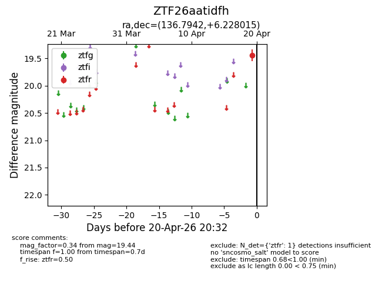
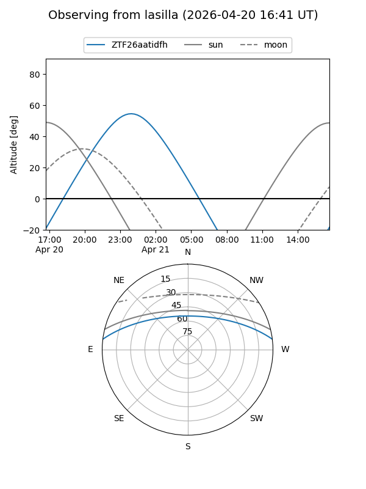
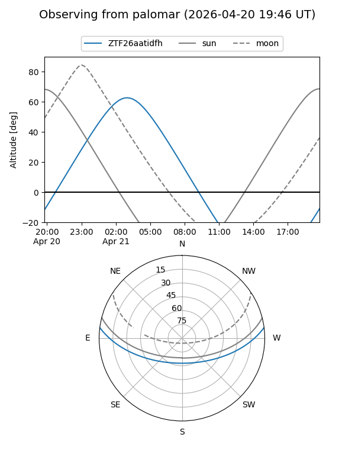

ZTF26aatidfh
Target ZTF26aatidfh at 2026-04-20 20:42
Aliases and brokers:
FINK: link
Lasair: link
ALeRCE: link
alt names
ZTF26aatidfh (ztf,fink_ztf)
Coordinates:
equatorial (ra, dec) = 136.7942,+6.22801
equatorial (HMS+DMS) = 09:07:10.60,+06:13:40.85
galactic (l, b) = (223.6759,+32.91327)
Flags:
Photometry:
last ztfr=19.44
1 ztfr detections
Lightcurve

Visibility


Additional plots